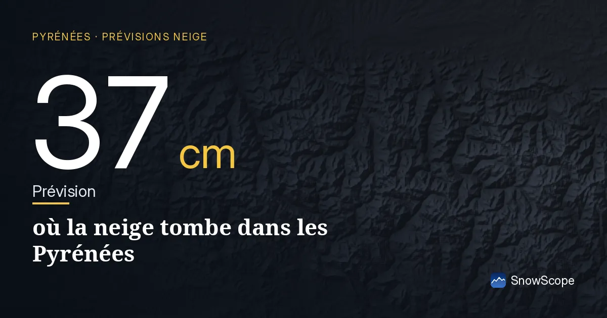
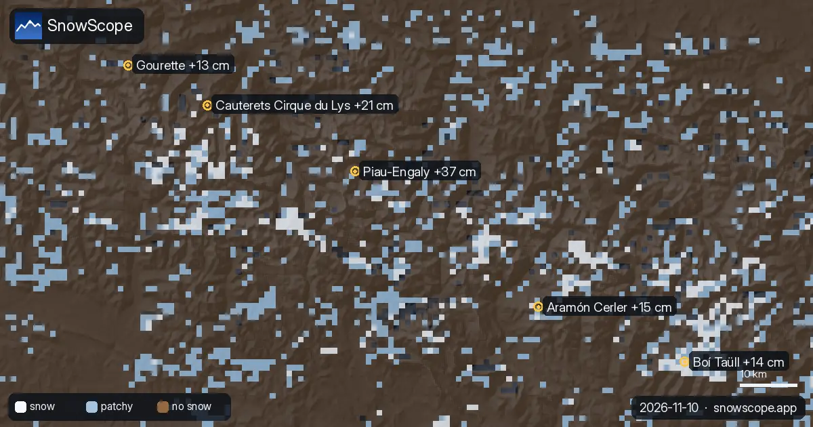
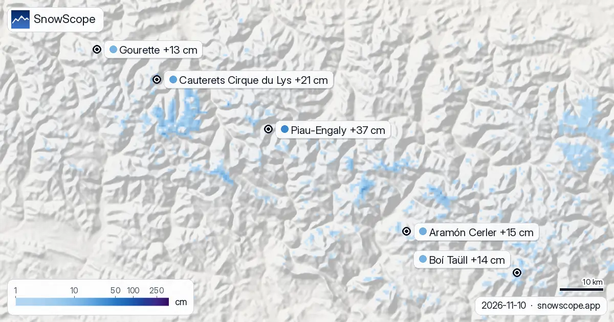

Prévision 37 cm : où la neige tombe dans les Pyrénées
Piau-Engaly sera la station la plus enneigée des Pyrénées ces trois prochains jours : 37 cm au total, dont 24 cm le 12 novembre. Au passage du système, le niveau de congélation descend de 3 320 mètres à 2 370 mètres, apportant une neige accumulée aux altitudes inférieures.
Consultez les prévisions neige en temps réel pour Piau-Engaly sur l'application SnowScopeHauteurs de neige, alertes poudreuse et carte 3D, gratuitement.
Où tombe la neige fraîche
Piau-Engaly, qui n'a actuellement que 1 cm sur ses pentes supérieures, recevra le plus de neige fraîche des Pyrénées : un total prévu de 37 cm. Les chutes de neige seront distribuées sur toute la montagne, le sommet (2 527 m) recevant environ 6 cm et les altitudes intermédiaires (2 144 m) environ 4 cm.
Cauterets Cirque du Lys recevra 21 cm. Les stations espagnoles Aramón Cerler et Boí Taüll verront respectivement 15 cm et 14 cm. Seules 37 stations de la région ont actuellement une neige mesurable, contre 47 il y a deux jours.
| Station | Hauteur de neige | Neige fraîche, 72 h | Attendu, jours suivants | Sommet |
|---|---|---|---|---|
| Piau-Engaly | 1 cm | 0 cm | 37 cm | 2 527 m |
| Cauterets Cirque du Lys | 20 cm | 0 cm | 21 cm | 2 420 m |
| Aramón Cerler | 8 cm | 0 cm | 15 cm | 2 618 m |
| Boí Taüll | 8 cm | 0 cm | 14 cm | 2 747 m |
| Gourette | 0 cm | 0 cm | 13 cm | 2 453 m |

Quand tombe la neige
Les chutes les plus importantes auront lieu le 12 novembre. À Piau-Engaly, la prévision annonce 6 cm le 11 novembre, 24 cm le 12 novembre, et 7 cm le 13 novembre. Cauterets suivra un schéma similaire : 1 cm le 11 nov, 12 cm le 12 nov, et 8 cm le 13 nov.
Le timing est important : le 11 novembre, le niveau de congélation sera autour de 2 730-3 180 mètres, donc la neige aux altitudes basses sera mouillée ou marginale. Le 12 novembre, il baisse à 2 500-2 940 mètres, permettant une consolidation sur toute la montagne. Le 13 novembre, il baisse encore à 2 370-2 480 mètres, mais les intensités de chute diminueront.

Effets d'altitude
La neige la plus importante le 12 novembre se consolidera partout où le niveau de congélation le permet. Le pic de 24 cm à Piau-Engaly sera une neige ferme au-dessus de 2 500 mètres, le niveau de congélation prévu pour ce jour-là. Au-dessous de cette altitude, l'accumulation risque de rester mouillée et lente.
À Boí Taüll, qui enregistrait 0 cm le 10 novembre à 2 537 mètres, la neige fraîche devrait atteindre le terrain le 13 novembre. Cauterets ajoutera 21 cm à sa base existante de 20 cm, tandis que Piau-Engaly passera de 1 cm à environ 38 cm.
Situation régionale
La région a connu une perte de couverture neigeuse rapide : de 2 150 km² le 8 novembre à 880 km² aujourd'hui, un recul drastique en seulement deux jours. Le 13 novembre, la prévision annonce environ 790 km² de couverture neigeuse et 12 stations au-dessus du seuil de détection de neige.
Cette contraction apparente malgré la neige fraîche reflète une transition : les pentes basses verront de la neige mouillée ou de la pluie tandis que seuls les plus hauts sommets consolideront la nouvelle accumulation. Le système qui arrive réinitialisera le tableau mais avec une bande d'altitude plus étroite de neige skiable.
Fiabilité de la prévision
La confiance du modèle dans ce système est bonne pour le timing et la quantité. Les chutes les plus importantes (24 cm le 12 novembre) sont prévues de manière cohérente, et les totaux des meilleures stations reflètent des données atmosphériques stables.
La principale incertitude est le niveau de congélation : un petit changement de température décale la limite neige/pluie considérablement, affectant où la neige fraîche se consolide. En début de saison, 37 cm à Piau-Engaly et 21 cm à Cauterets seraient une accumulation significative—si elle tient. Au-delà du 13 novembre, nous n'avons pas encore de données de prévision.
Conseils aux skieurs
- Piau-Engaly et Cauterets (21 cm) seront les meilleurs choix pour la neige fraîche. Si vous prévoyez de skier, le 12 novembre devrait être la priorité ; c'est quand l'accumulation la plus importante et les conditions les plus froides s'alignent.
- Le 12 novembre, dirigez-vous vers les altitudes au-dessus de 2 500 mètres pour de la neige ferme ; c'est le niveau de congélation prévu. Le 11 novembre, le niveau de congélation est beaucoup plus haut (jusqu'à 3 180 m), donc attendez-vous à de la neige mouillée aux altitudes inférieures.
- Les stations espagnoles Aramón Cerler et Boí Taüll gagneront respectivement 15 cm et 14 cm, Boí Taüll ayant un terrain à plus haute altitude (jusqu'à 2 747 m) qui devrait blanchir le 13 novembre.
- La neige en début de saison est fragile. Ces prévisions supposent que les précipitations tombent sous forme de neige aux altitudes prévues. Des conditions plus chaudes que prévu ou un soleil plus fort pourraient réduire la profondeur et la durabilité de la neige fraîche.
- Consultez le bulletin officiel d'avalanche de Météo-France avant de vous aventurer hors-piste, surtout lorsque la neige fraîche arrive sur des pentes en réchauffement (11 nov) puis sur des pentes froides et raides (12-13 nov).
À propos de ces chiffres
Les hauteurs de neige des stations sont la neige la plus épaisse sur le haut du domaine, d'après le modèle de neige SnowScope (environ 1 km, calcul du 10 novembre) ; ce sont des estimations pour une zone, pas une mesure en un point. Les valeurs des stations de mesure sont mesurées à la date indiquée. Les prévisions peuvent changer. Consultez toujours le bulletin d'avalanche officiel avant le hors-piste.
Bulletins d'avalanche officiels: Météo-France – Bulletin d'estimation du risque d'avalanche
Citer ce bulletin
Pour la recherche, l'enseignement ou la presse : chiffres et graphiques réutilisables librement sous CC BY 4.0 avec cette citation.
SnowScope (2026), Prévision 37 cm : où la neige tombe dans les Pyrénées, https://snowscope.app/blog/fr/2026/11/pyrenees-piau-engaly-snow-forecast-10-november-2026.html, consulté le 2026-11-10
SnowScope (Atlas Labs). (2026, November 10). Prévision 37 cm : où la neige tombe dans les Pyrénées. SnowScope snow reports. https://snowscope.app/blog/fr/2026/11/pyrenees-piau-engaly-snow-forecast-10-november-2026.html
BibTeX
@misc{snowscope2026pyreneespiauengalysnowfo,
author = {{SnowScope (Atlas Labs)}},
title = {Prévision 37 cm : où la neige tombe dans les Pyrénées},
year = {2026},
month = nov,
howpublished = {\url{https://snowscope.app/blog/fr/2026/11/pyrenees-piau-engaly-snow-forecast-10-november-2026.html}},
note = {Published 2026-11-10 11:18 UTC; accessed 2026-11-10}
}· CC BY 4.0 · Méthodes, données et outils →
Piau-Engaly : neige et température selon l'altitude, cet hiver vs l'hiver dernier (outils) →
Suivre Piau-Engaly
Gratuit : un message quand la neige arrive, et la météo chaque matin.